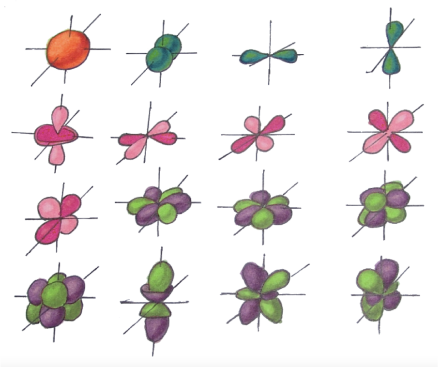

1. Строение атома.
Определение 1.1. Атом - мельчайшая химически неделимая частица, состоящая из ядра и электронов.

Рис. 1. Строение атома.
Замечание 1.1. Количество протонов совпадает с порядковым номером элемента.
| Протон |
+1 |
1 |
| Электрон |
-1 |
0,001 ≈ 0 |
| Нейтрон |
0 |
1 |
Замечание 1.2. Атом - электронейтральная частица, значит, количество протонов и электронов в атоме одинаково.
Замечание 1.3. Масса атома складывается из массы всех нейтронов, протонов и электронов в атоме:

Замечание 1.4. Массовое число равно сумме количеств протонов и нейтронов в ядре. Тогда количество нейтронов N = Ar - P, где P - порядковый номер.
Определение 1.2. Изотопы - атомы с одинаковым количеством протонов, но разным количеством нейтронов.
Пример 1.1. Изотоп радиоактивного иода 13153I, в огромном количестве поступивший в атмосферу во время взрыва на Чернобыльской АЭС, содержит 53 протона, 53 электрона, 78 нейтронов.
Электронные конфигурации нейтральных атомов.
Определение 1.3. Орбитали - место наиболее вероятного нахождения электронов. Орбитали могут быть различной формы (s, p, d, f, ...):

Рис. 2. Формы орбиталей.
Определение 1.4. Валентные электроны - электроны на послднем энергетическом уровне.
Замечание 1.5. Количество энергетических уровней совпадает с номером периода, в котором находится элемент. Количество валентных электронов - с номером группы.
Принципы заполнений уровней:
- принцип Паули (на каждой орбитали может находиться максимум 2 электрона, причем с различными спинами);
- принцип наименьшой энергии/правило Клечковского (подуровни заполняются электронами по мере роста их энергии);
- правило Хунда (в пределах одного подуроаня сначала заполняется каждая из орбиталей по отдельности, только потом электроны начинают спариваться).
-
Главное квантовое число n определяет общую энергию электрона на данной орбитали (энергетический уровень) и может принимать любые целочисленные значения:
n = 1, 2, 3, ..., ∞
Под главным квантовым числом, равным ∞, подразумевают, что электрону сообщена энергия, достаточная для его полного удаления от ядра (ионизации атома).
-
Различие в энергетическом состоянии электронов, принадлежащих к разным подуровням данного энергетического уровня, отражает побочное (орбитальное) квантовое число l, которое иожет принимать целочисленные значения:
l = 0, 1, ..., n - 1
Обычно численные значения l принято обозначать следующими буквенными символами:
-
Магнитное квантовое число ml характеризует ориентацию орбитали в пространстве. Оно может принимать любые целые значения, как положительные, так и отрицательные:

-
Спиновое квантовое число ms имеет два возможных значения:

Спин - это собственный момент импульса электрона, не связанный с движением в пространстве.
Пример 1.2. При l = 1 есть три возможных значения магнитного квантового числа:
ml = -1, 0, +1
Пример 1.3. При l = 3 магнитное квантовое число может иметь семь значений:
(2l + 1 = 7) : -3, -2, -1, 0, +1, +2, +3
Принципы заполнения уровней в терминологии квантовых чисел:
- принцип Паули (в атоме не может быть двух электронов, для которых совпадают квантовые числа);
- принцип Клечковского (электрон в основном состоянии занимает уровень с наименьшей суммой n + l);/li>
- правило Хунда (в рамках конкретного подуровня электроны располагаются по орбиталям таким образом, чтобы суммарный спин был максимальным).
Главная задача: распределить электроны по уровням и подуровням согласно вышеперечисленным принципам.
Пример 1.4. Электронные конфигурации различных элементов:

Для удобства цветом отмечены электроны на внешних уровнях. Можно заметить, что их количество действительно совпадает с номером группы.
Замечание 1.6. Проскок электрона - явление, которое присуще d-элементам. Заключается в том, что s-электрон проскакивает на d-подуровень в случае, если возможны конфигурации d5 и d10

Рис. 3. Электронные уровни.